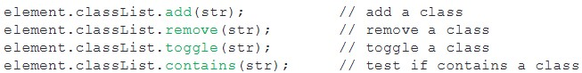

Week 1 - Session 1 - Lecture: Intoduction to Web Development
What has changed in 25 years of time on the web?
- Technology - E.g. New devices, screen width, easy to interact with media
- The way the web provide services and support organisation
- User Experience and expectations
- Roles and skills
- The way to design and develop the web
- Where content came from
Responsive Web Design
User nowadays use many different kinds of devices which each has a different screen width - E.g. Mobile, Tablet, Laptop, TV, etc. Also able to use the device wherever and whenever they want - E.g. Street, Home, Transport, etc...
To create a responsive Website means it should be accessible for user anytime, anywhere and on any devices. Also, it has to provide the same amount of information, functions and user experience
History of Web Development Standards
World Wide Web (WWW) was invented in 1989 by Berners-Lee. Aim to share scientific documents over networks
Since 1993, each Web browser has it own Hyper-Text Markup Language (HTML) - each Webpage as a different one
There was a browser war between Netsacpe and Microsoft's Internet Explorer
Since 1994, the World Wide Web Consortium (W3C) has standardlise the development of Web. Which is benificial:
- Can be displayed on any standards browser, platform and device
- People with disablities can still access the content within the webpage
- Can be access on older browser, E.g. Lynx, speech, etc
- The code is easier to read and change, which saves time and money
- Helps to improve Search Engine Rankings
The Standard-Compliant HTML Document
!doctype html
html lang="en"
head
meta charset="UTF-8" /
title, Home page, /title
/head
body
p, Hello world, /p
/body
/html!doctype html: Doctype declaration for HTML5 standard
html lang="en": Main language of the document
head: Document Head
meta charset="UTF-8" />: unicode character set
title: Appears on the website tag
body: Document Body
h1, h2, p, ...: Content marked up with HTML tags, different tags give out different output
Standard-Compliant Browsers
HTML - Written for both human user and browsers
Web Brower is a powerful software application that retrieves and read HTML, CSS, ...files. Also renders the webpage
Web Standards
It specify the "syntax" and "semantics" of web markup languages, like: HTML and CSS
Syntax: format and rules of user
- Tags are lowercase
- Tags are explicity closed with "/", E.g.
/p - Tags are nested correctly
Semantics: meaning
- Tags are markup text in a meaningful way, E.g.
p: A paragraph of text
Seperation of Content and Presentation
- HTML markup specifies the structure of the content of a webpage in a meaningful way
- HTML should not be use to define how a webpage should be displayed
- CSS is the language that specifies how to content should be presented by a browser
- CSS stylesheet are linked from the head of the HTML document that they styled -
link href="css/stylesheet.css" rel="stylesheet"
Week 1 - Session 2 - Lecture: HTML Markup Basics
Strict Syntax
- MUST have
!doctype html - Tags MUST be always closed, E.g.
/h1 - Tags MUST be in lowercase, E.g.
h1 - Attribute names MUST be in lowercase, E.g.
width = "200" - Attribute values MUST be nested in quotes
- Elements MUST be correctly nested
HTML markup
Comes from pre-digital print industry, uses code words and symbols to instruct compositors how to set the wriiten content into type for printing
The way that early word processors worked before the Graphical User Interface (GUI)
HTML semantics: a markup language is meaningful to both computer and humans
Pairs of markers - Tags, which are applied before and after content or data to define its structure
- Important text:
strong - Emphatic text:
em
Instructs the browser how to structure the content
An HTML webpage is ade up of different elementsm. Starting with a tag and ending with a matching tag
There are a few self-closing tags, which is a single closed tags. E.g. line breaks br, hr or image img src="filename/photoName.png/jpg"
HTML5 section elements
It includes new semantic page section elements instead of using div for every section
headernavmainsectionarticleasidefooter
Block VS Inline elements
Block elements: Starts on a new line, it can contain nested inline elements or other block elements. E.g. h1, p, ol, ul, etc.
Inline elements: Nested within the block elements, CANNOT contain any block elements but can contain other inline elements. E.g. em, strong, etc.
Week 2 - Session 1 - Lecture: HTML Document Structure
An element is made out of : start tag, content and end tag
HTML5 section elements
class attribute: Use to identify elements of the same class. Allow more than one occurrence within the web document
id attribute: Use to uniquely identify an element. Allow only one within the while web document
div tags : Used to markup grouped content in a document in roder to style these elements with CSS properties
HTML5 section element semantics
header : Header of the web document or content in a document
nav : Navigation for a document, which contains links to other section of the current document ot other documents
main : Contains the main content of the page. Only appears onces in each webpage
aside : Section of the page with content that is seperate from the main content. Often appears in a sidebar
article : Self-contained chunk of content. Like a magazine style page
footer : Content at the foot of a document. Like Author details and date
Navigating content: Anchors / Links
Skipping from topic to topic follwing a trail of links
Hypertext navigation is achieved through anchors by using the a tag to anchor together 2 seperate but related pages or pieces of information
Link anchors point the browers to a destination:
- Internal link : Another section of the same page
- Local link : Another page on the site
- External link : Another website
- Email link : An email address
a href="xxx.html" xxxxx /aa - tells the browser to link to another resource follwing with a /a
Week 2 - Session 2 - Lecture: Cascading Stylesheets (CSS) 1
Cascading Style Sheets Development
CSS is a declarative language for specifying the presentation if HTML elements by a browser
Can easily style HTML pages
Cascading Style Sheets
Lead to economies in websites developmetns and maintenance: Structure of Content (HTML) and presentation (CSS)
Can attach different stylesheets to the same HTML document
To attach an external stylesheet:
link href="stylesheet.css" rel="stylesheet"href attribute points to the stylesheet file
rel attribute specifies the relationship between the web document and
Embedded and inline CSS
The style are written inside style tags and head of th HTML document
Both will over-ride an external stylesheet, which will cause pages hareder to debug, change and maintain
CSS Syntax
Rules that specify how the browser should present the element in the HTML document
- The selector which targets an HTML element
- One or more declaration, inside curly braces, state how the element will be displayed
declaration:
- Property: the name of some aspect of presentation. E.g. font-size, background-color,etc.
- Value: For the property. E.g. 14px, #FFFFFF
Rule or Declaration
Selectors - target all the same element
Value - for the property
Property - Features of an element that can be styled
NOTE: punctuation and spaces are very Important
CSS properties
- Straightforword, while must be free errors
- When properties are combined in a rule, they can be use to create graphic effects like: rollovers, patterns, gradient and layout
class selector VS id seletor
class selector: has a full stop follwed by the class attribute value
id selector: has a hasgtag followed by the class attribute value; It can only be used only once in an HTML document
Pseudo-class selector
Targets the element in its different state
a:linkSource anchor of a hyperlinka:visitedSource anchor of a visited linka:hoverAnchor when the user move cursor over ita:activeAnchor when the user clicks down on ita:focusWhen anchor gains keyboard focus
Week 3 - Session 1 - Lecture: Cascading Stylesheets (CSS) 2
CSS box model
Controls how elements are displayed and position on a web page
Each HTML element is treated as if it is a box
Some of this elements are blocked level which mean it takes up a whole line on the page
Other element are inline level which are nested wihtin the a block element
Can be organised in a sequence, one after another or nested wihtin other boxes
A box model describes the space taken up by an element
A box have 4 edges:
- margin edge
- border edge
- padding edge
- content edge
Can use padding property to create space inside the element: between the content and the edge of the padding
Use margin property to create space outside the element between it and adjacent element
Styling the box - background
Properties can be styled for all regions of the box
The default id transparent
Can style the background with these
backgroundbackground-colorbackground-imagebackground-repeatbackground-position
CSS units
Defines the length: the distance value of elements
Absolute :
- in - inches
- cm - centimeters
- mm - millimeters
- pt - points, which = 1/72 inches
Relative :
- px - computer screen pixels
- % - percentage of another value
- rem - font size of the root element
- em - font size of the elemenet
- vw - 1% of viewport width
- vh - 1% of the viewport height
Absolute VS Relative lenght units
Absolute:
- Fixed measurements
- Can only work if the browser knew precisely the display resolution of the screen and size of the device viewport
Relative:
- No fixed value, size is relative to a value specified for another property
- px, %, rem, em, vw and vh are most commonly used in web development
pixel : gives an illusion of control
percentage : provides excellent flexibility in designing fluid web pages, elements that adjust to fit in the browser viewport
em : the most scaleable relative lenght unit, use to specify the measurement of any CSS box property; the default size is 16px
rem : A lot easier to understand than em. It is equal to the value ofd the font-size of the root element
vw, vh : viewport percentage lengths define the size of an element relative to the size of the viewport, vm is mainly used in web typography as it allows text to resize depend on the viewport size
Go to topWeek 3 - Session 2 - Lecture: Responsive Web Development 1
Responsive web design
For any web project, this factors are all very important
- Will site be accessed by a small screen mobile device?
- Will users access the site by more than one type of device?
- Will users expect the same quality of user experience and content from mobile, tablet and desktop web access?
- Will users expect the same functionality from mobile, tablet and desktop web access?
Web designers and developers have no control over how users are accessing the web - it's important to design a user experience that caters for all
Large number of variables – large screen smart TVs, e-book reader, games consoles, desktop, laptop, hi-res retina screens, tablet, mobile – different aspect ratios, landscape/portrait screen orientation
RWD - 3 techniques to learn
- layout
- Use these units to size elements, E.g. %, em, rem
- CSS layout modules, E.g. grids, flexbox, multi-column
- media queries
- Detect media, viewport sizes, screen width, etc.
- Style elements for devices with different capabilities
- media
- Flexible images for different screen widths
- Flexible media containers, E.g. Videos
Step 1 : The viewport meta element
- The viewport attribute for the meta element allows the mobile device viewport to be set to a specific width
- Add the code below in the
headand before thelink meta name="viewport" content"width=device-width, initial-scale=1"width=device-width: sets the pixel widthof the viewport to be equal to the screen width of the deviceinitial-scale=1: Tells the browser to render the web page at full-size when it's loaded rather than scalling it down
step 2 : CSS3 media queries
- CSS3 media queries are the things that make the web page responsive
- Inspects the capabilities of the device that is being access to a webpage, checking features:
- width and height of the viewport
- device screen width and height
- orientation of the screen - landscape or portrait mode
- screen resolution
- aspect ratio - the proportional relationship between display width and height
- Consists of a media type and one or more expression taht checks for particular media features such as width, height, screen resolution
- Logical expression
@media screen
Min & Max
min : equal to or greater than
max : equal to or smaller than
breakpoint
Queries test for the viewport max-width and/or min-width and appy a series of rules to optimise presentation
Standard widths are often used as breakpoints
Go to topWeek 4 - Session 1 - Lecture: Responsive Web Development 2
RWD - 3 techniques to learn
- Fluid layout
- CSS media queries
- Responsive media
Fluid Layout : use realtive units yo size elements. Like: %, em, rem, fr
CSS media queries : Detect media, viewport size, screen widths. Also style elements for devices with different capabilities
Responsive media : Flexiable image for different screen widths and media container
Image basic
Vector(SVG) and bitmap(PNG,JPG,GIF) images are displayed as pixel on a computer device screen
Screen resolution refers to the number of pixel displayed per unit of length on the screen and depends on the size of the screen
Image display size VS file size
Imagee display size
- Image resolution = number of pixel in a linear inch of an image width(W) * height(H). Measured in dots per inch(dpi)
- Pixel dimensions of an image = the number of pixel along its height and width
- File size is the size of an image file measured in kilobytes(K), megabytes(M) or gigabytes(G)
- File size and image quality increase in direct proportion to the resolution and pixel dimensions of an image
- File size is an issue - large image load slowly when views online and compromise web page usability
- Image for the web can be optimised to get the best trade-off between file size and image quality, which saves images at the right dimensions, resolution and acceptable quality
Flexible image
Bitmap images have fixed pixel dimensions - height and width
Pixel-size images may overflow their containing elements
Flexible image measured as a percentage of the element in which thay are nested
Go to topWeek 4 - Session 2 - Lecture: Responsive Web Development 3
Multi-column modules
column-count: Defines the number of columns. E.g.column-count:2;column-width: Defines the width of the columns. E.g.column-width:20em;column-gap: Defines the space between columns. E.g.column-gap:2em;column-rule: Defines the border between columns. E.g.column-rule:1pz solid #ccc;column-span: Defines an element that spans across columns. E.g.column-rule:1px solid #ccc;column-fill: Define how the browser will fill the column with content, but only applies to elements which have a height property / value. E.g.column-fill:auto;
Week 5 - Session 1 - Lecture: HTML Forms and Styling
Forms
It is essential for web functionality and interactivity. For example:
- Converting website browser into customers and contributors
- Drivers for web application workflow
- E.g. e-commerce, e-gov, blogs,...
To make forms interactive
Use Script language. It is needed to make forms functional, like: to exchange data between the user and the website owner
Client-side VS Server-side
Client-side ( JavaScript ): Can check the accuracy of data entered in the form before it is sent to the sever
Server-side ( PHP, ASP.NET): Process the data provided by the user, checks it and send the appropriate response back to the user
Client server application architecture
- Input data in form. E.g. Username and password
- Client validates login details and sends data to server
- Server validates details and sends back customer data
- Client display customer data on web page form
Form processing
How form should be used
- Laid out clearly and logically
- Give out clear guidance and feedback to users
- Have consistent design through out the whole website
- Use correct semantic HTML form elements
The HTML form element
All the form element must be nested within the form tag
The action attribute is required as it is used to specify the Uniform Resource Indicator(URL) of a web page that process information submitted via the form
The method attribute specifies the HTTP method for submitting form data to the server
The HTML input element
It is used for the interactive controls through which users can enter data into the form
Input elements have a type attribute which is used to specify the type of control to display and the type of data that can be input throigh the control. E.g. button, checkbox, radio, password, reset,...
Input types are asscociated with specified controls
HTML input types examples
input type - text
form
label for="XXX", xxx:, /label
input type="text" id="XXX"
/forminput type - checkbox
Checkboxes are used to select zero or more options from a predefined list
form
label for="XXX", xxx, /label
input type="checkbox" id="XXX" checked
label for="YYY", yyy, /label
input type="checkbox" id="YYY"
/forminput is an inline element
input type - radio button
A group of radio buttons is used when there is only one option in a list can be checked
form
label, XXX, input type="radio" name="likes" value"XXX", /label
label, YYY, input type="radio" name="likes" value"YYY", /label
label, ZZZ, input type="radio" name="likes" value"ZZZ", /label
/formThe name attribute links buttons in a group and enforce the single option
input type - submit
input type="submit" id="send" value="Send login details"input type - button
The button input type is a button with no default behaviour
input type="button" id="send" value="Send details"input type - reset button
The reset input type is a button that when activated resets the form to its default state, which returns all the value in the input element to how they were before the user entered any data
input type="reset" id="reset" value="Clear from"HTML5 input types
date: control is a calendarcolor: control is a colour pickernumber: control is a spinner for entering a number, it can also define min and max value as attributerange: slider for entering a number in a range
Native HTML5 form validation
It displays an error message if the input is invalid
Also can required a field must be completed by using a boolean attribute "required"
label for="XXX", xxx: , /labelinput id="XXX" type="text" requiredHTML login form CODE
form action="" method="post" id="contact"
fieldset id="login"
legend, Login details: , /legend
label for="username", User name: /label
input type="text" id="name" required
label for="password", Password: /label
input type="password" id="pwd" required
/fieldset
/formHTML5 - placeholders
Used to display text within the formfield. When there is no value, it will show; When the user typed something in, it will be removed
Other form elements - select
A drop down list control for selecting from a set of options
label for="list">What pet would you like for Xmas*?, /label
select name="list" id="list" size="4"
option value="dog" selected="selected", Dog, /option
option value="cat", Cat, /option
option value="rabbit", Rabbit, /option
option value="tortoise", Tortoise, /option
/selectOther form elements - textarea
Multiline plain text edit control for entering text data of a variable and unspecified length
label for="Comment", Comment: , /label
textarea, /textarea
HTML form elements
fieldset- group related form element or blocks of datalegend- for the name of a fieldsetlabel- for describing a form element to the user and associating the description with theinputelement and control
Week 5 - Session 2 - Lecture: Testing and Evaluation
Testing and evaluating
Go to topWeek 6 - Lecture: Exam Preparation
About Exam
Go to topWeek 7 Session 1 - Lecture: Introduction to JavaScript
Procedural VS Declarative
rocedural :P Describes how things should be done.
Declarative : Describe how things should be.
Interpreted VS Complied
Interpreted :
- Read
- Translate source code each time upon exection.
Work flow : Code -> Run -> Code -> Run -> ...
Compiled :
- Read
- Translate source code once into executable file.
- Execute a lot of times.
Work flow : Code -> Compile -> Run -> Code -> Compile -> Run -> ...
Weekly VS Strongly Typed
Weekly Typed : Variable can hole any type of data.
Example:
int x = 10;
x = "hello";This will NOT cause any ERROR
Strongly Typed : Variable are of a specific data type and can only hold data of that type
Example:
int x = 10;
x = "hello";This will cause ERROR
Chrome Developer Tools
- Inspect HTML, CSS and JavaScript
- Debug
- Analyse and Optimise
To activate : CTRL + SHIFT + I OR right-click page and select inspect
Go to topWeek 7 Session 2 - Lecture: Variable, Datatypes and Operators
Primitive VS Non-Preimitive Date Type
Primitive Date Type : A way of defining and grouping values that cannot be changed.
JavaScript has 8 Primitive Types:
- Number
- String
- Boolean
- Undefined
- Null
- BigInt
- Symbol
Non-Premitive Data Type : Allows collection of primitve data values to be organised and processed.
JavaScript has 2 Non-Primitive Types:
- Array
- Object
Variables
When variable is created, it can only hold one type of data if using Java or C++; it can hold different datatypes if it is using JavaScript
Data Types
Numbers :
- Are default folatin-point numbers with double precision.
- Can have decimail places
- Negative Number can using a minus sign in front of the number
- Has 3 symbolic values: +Infinity, -Infinity and NaN(Not a Number)
Arithmetic Operators
- Addition:
console.log(a + b) - Subtraction:
console.log(a - b) - Multiplication:
console.log(a * b) - Division:
console.log(a / b) - Modulo:
console.log(a % b)
Increment and Decrement
Increment (++) : Increases the value by 1
year++; == year = year + 1;
Decrement (--) : Decreases the value by 1
year--; == year = year - 1;
Operator precedence: Arithmetic operation are executed in (BODMAS):
- Bracket first
- Orders (Powers, Roots, Increments)
- Division and Multiplication
- Addition and Subtraction
String :
- Enclosed in single quotes or double quotes
mood_str = "happy"ORmood_str = 'happy'- If strings contains single quote, like : don't, won't, etc. Must be escaped using a
\ let mood = "don't ask";ORlet mood = 'don\'t ask';- It can be Concatenated with other strings and any other data type with the "+" sign
Boolean :
- Values are either: True OR False
If it use string value in arithmetic operation, JavaScript automatically converts it to a number which it happeds silently and cause errors
To convert Strings into numbers:
var fahrenheit_str = "95";
var fahrenheit = parseInt(fahrenheit_str);
var celsius = (fahrenheit - 32) / 1.8;Array :
- List-like objects containing multiple values.
- Values are accessed by an index.
- Indices start at 0 not 1.
- Can be decalred with [].
Objects :
- Have a set of properties and/or methods
- JavaScripts object can be decalred with {}
Determining types :
typeof: used to find the type of variable
- Number:
console.log(typeof 42); - String:
console.log(typeof "42"); - Boolean:
console.log(typeof true); - Object:
console.log(typeof [1,2,3]); - Object:
console.log(typeof {name: "Zoe", age: 21});
Week 8 Session 1 - Lecture: Control Structures and Operators
Control Structure
Selection : Branching Structures
- Alternative statements are carried out depending on a condition
- Branching constructs include
if / elseandswitch / case
Basic if statement
One of the most common branching statements :
if (condition) {
// statements for when condition is true
}If the condition evaluates to TRUE, then the statement is executed
Classic if / else statement
Often having 2 alternatives depending on a condition
if (condition) {
// statements for when condition is true
} else {
// statements for when condition is false
}Evaluates as TRUE or FALSE and executes statement
Multiple if / else statement
if / else statement can be chained together
if (dayOfTheWeek === 1) {
console.log("Monday");
} else if (dayOfTheWeek === 2) {
console.log("Tuesday");
} else if (dayOfTheWeek === 3) {
console.log("Wednesday");
} else if (dayOfTheWeek === 4) {
console.log("Thursday");
} else if (dayOfTheWeek === 5) {
console.log("Friday");
} else if (dayOfTheWeek === 6) {
console.log("Saturday");
} else if (dayOfTheWeek === 7) {
console.log("Sunday");
}Switch Statements
Alternative to multiple if-else statement, it is more suitable if these are a lot of possible condition
switch(day) {
case 0:
console.log("Monday");
break;
case 1:
console.log("Tuesday");
break;
case 2:
console.log("Wednesday");
break;
case 3:
console.log("Thursday");
break;
case 4:
console.log("Friday");
break;
case 5:
console.log("Saturday");
break;
case 6:
console.log("Sunday");
break;
default:
console.log("Invalid Day")
}Iteration : Looping Structures
- Statements are carried out repeatedly whicle or until a condition is met
- includes :
whileandfor
Classic while loop
Use when the statement need to be repeated until it mets a condition
while (condition) {
// statements;
}Classic for loop
Use when statements need to be repeated for a certain amount of times
for(initialize; test; increment) {
// statements;
}do ... while loop
Less common to use and it test conditions at the end of the loop instead at the beginning
do {
// statement
} while (condition);The break statement
- Used to exit a block of statement regardless of the condition controlling its execution
- When exiting a block of a statement, the program execution resumes ith the first statement
- Typically used in
switchstatement andloops
Comparison operators, Logical operator and Expression
Comparison operators and logical operators to formulate expression
Expression evaluate, which can be TRUE or FALSE
Comparison Operators
Is use to compare values
>: greater than>=: greater than or equal to<: less than<=: less than or equal to==: equal to!=: not equal to (interpreted )===: equal to!==: not equal to (strict)
Testing for equality
JavaScript has 2 types of equality operations:
- With coercion == and its negation !=
- Without coercion === and its negation !==
Best practice is to use === and !== to test for equality as it stay in control and aviod unexpected results
Logical operators
&&: Logical AND. True if both operands are TRUE||: Logical OR. True if either or both operand is TRUE!: Logical NOT. Inverts the logical value of its operand
Week 8 Session 2 - Lecture: Working with Strings
String Basic
One of JavaScript's primitive types but JavaScript also has a String object ith methods and properties.
Declaring strings
Strings are typically declared as literals, enclosed in either signle quotes or double quotes as delimiters
String can also be created using String object directly
Special characters
Control characters and string delimiters used inside a string must be escaped with a backslash character
Concatenating strings
Strings can be concatenated with other strings by using the "+" sign
let greet_str = "Hello";
let name_str = "Bob";
let num = 1000000;
let text_str = greet_str + " " + name_str
+ ", you have " + num
+ " followers (you wish)";
console.log(text);String Methods and Properties
String.length
This length property returns the number of characters in a string
string.length;Example:
const msg_str = "Hi ";
console.log(msg_str.length); // 3String.charAt()
This method returns the character at the specified position
String.charAT(index);Example:
const msg_str = "Hello World";
console.log(msg.charAt(0)); // H
console.log(msg.charAt(1)); // e
console.log(msg.charAt(6)); // W
console.log(msg.charAt(msg.length-1)); //dString.indexOf()
This methods returns the index of the first occurrence of a given string or -1
String.indexOf(string, from);Example:
let str = "Hello World";
console.log(str.indexOf("H")); // 0
console.log(str.indexOf("World")); // 6
console.log(str.indexOf("l")); // 2
console.log(str.indexOf("l", 5)); // 9String.toLowerCase() & String.toUpperCase()
This methods return the calling string's value converted to lowercase and uppercase letters
String.toLowerCase();String.toUpperCase();Example:
let name = "Bob";
console.log(name_str === "bob"); // false
console.log(name_str === "BOB"); // false
console.log(name_str.toLowerCase() === "bob"); // true
console.log(name_str.toUpperCase() === "BOB"); // trueString.trim()
The method returns the calling string's value with leading and trailing whitespace removed
String.trim();Example:
let input_str = "spacecowboy99 ";
let username_str = input_str.trim();
if(username_str.length > 0) {
console.log("login " + username_str);
} else {
alert("Please enter a valid username");
}String.substr()
This method returns part of a string starting at index
String.substr(index [,length]);Example:
let filename_str = "selfie.jpg";
let dotIdx = filename_str.indexOf(".");
let extension_str = filename_str.substr(dotIdx + 1);
if(extension_str === "jpg"){
console.log("JPEG Image");
} else {
console.log("Not a JPEG Image");
}String.substring() & String.slice()
This methods returns part of a string at start up to the optional second parameter end
String.substring(start [,end]);String.slice(start [,end]);Example:
let str = "Brighton";
console.log(str.substr(1,5)); // "right"
console.log(str.substring(1,5)); // "righ"
console.log(str.slice(1,5)); // "righ"String.split()
This method splits a string into an array of substrings by seperating it along a seperator.
String.split([seperator[, limit]]);Example:
let a, str = "May the force be with you";
a = str.split(); // ["May the force be with you"]
a = str.split(""); // ["M", "a", "y", " ", "t", "h", … "u"]
a = str.split(" "); // ["May", "the", "force", … "you"]
a = str.split(" ", 2); // ["May", "the"]
a = str.split("th"); // ["May ", "e force be wi", " you"]Strings in ES6
String.startWith()
This method determines whether a string starts with the specified string, returning TRUE or FALSE
String.startsWith(searchString[, position]);Example:
let url = "https://www.brighton.ac.uk";
if(url.startsWith("https:")) {
console.log("secure connection");
} else if(url.startsWith("http:")) {
console.log("unsecured connection");
} else {
console.log("not a valid URL");
}String.endsWith()
This method determines t=whether a string ends with the specified string, returning TRUE or FALSE
String.endsWith(searchString[, length]);Example:
let filename = "file1.jpg";
if(filename.endsWith(".jpg")
|| filename.endsWith(".png")
|| filename.endsWith(".gif")) {
console.log(filename + " is an image");
} else {
console.log(filename + " is not an image");
}Week 9 Session 1 - Lecture: Working with Arrays
Arrays
Arrays are list=like objects where data is accessed by an index starting from 0
Arrays are good for serveral things :
- Processing lots of the same kind of thing
- Dealing with more than 1 thing
- Arrays and loops
Reason we need Arrays
- Accessing and manipulating page elements
- Processing data from a server, like: Lists and tables
- Turning string into data we can work with
Declaring Arrays
Arrays can be declared in array literal notation and using Array Object
For array literal notation:
let my_ary = []; // Empty array
let people_ary = ['Tom', 'Tim', 'Ann'];
For using Array object
let people_ary = new Array(); // Length not specified
let people_ary = new Array(10); // Length is specified
Reading and setting elements
Elements can be read and set using an integar index in square brackets following the name of the array
elem = ary[index]; // Read element at index
ary[index] = elem; // Set element array at index
Examples
let people_ary = ['Tim', 'Tom', 'Ann'];
console.log(people_ary[0]);Output : 'Tim'
console.log(people_ary[2]);Output : 'Ann'
console.log(people_ary.length);Output : 3
people_ary[2]='Bob';
console.log(people_ary[2]);Output : 'Bob'
people_ary[3]='Zoe';
console.log(people_ary[3]);Output : 'Zoe'
console.log(people_ary.length);Output : 4
JavaScript Arrays
JavaScript Arrays are different from arrays in other language like Java, C++ and C#
- As it is a weakly typed language, it can contain elements of different data types
- It can have gaps
- Accessing non-existent array elements does not throw an error but simply returns the special value indefined
Properties and methods
Array.form()Array.isArray()Array.observe()Array.ofArray.prototype.concat()Array.prototype.copyWithin()Array.prototype.entries()Array.prototype.every()Array.prototype.fill()Array.prototype.filter()Array.prototype.find()Array.prototype.findIndex()Array.prototype.flatMap()Array.prototype.flatten()Array.prototype.forEach()Array.prototype.Includes()Array.prototype.IndexOf()Array.prototype.join()Array.prototype.keys()Array.prototype.lastInedxOf()Array.prototype.map()Array.prototype.pop()Array.prototype.push()Array.prototype.reduce()Array.prototype.reduceRight()Array.prototype.reverse()Array.prototype.shift()Array.prototype.slice()Array.prototype.some()Array.prototype.sort()Array.prototype.splice()Array.prototype.toLocateString()Array.prototype.toSource()Array.prototype.toString()Array.prototype.unshift()Array.prototype.values()Array.unobservel()
Looping over an array
For loop
We can do a series of statement for each element in an array in a for loop
let fruits_ary = ["apple", "pear", "mango”];
for (let i = 0; i < fruits_ary.length; i++) {
console.log(fruits_ary[i]);
}Example: Adding up all the numbers in an array
let cost_ary = [5, 10, 41, 9, 24, 12];
let total = 0;
for (let i = 0; i < cost_ary.length; i++) {
total += cost_ary[i];
}
console.log(total);For Each
We can loop over arrays and execute a function on each element using forEach()
let fruits_ary = ["apple", "pear", "mango"];
Fruits_ary.forEach(function(item){
console.log(item);
});Example: Adding up all the number in an array
let cost_ary = [5, 10, 41, 9, 24, 12];
let total = 0;
cost_ary.forEach(function(item){
total += item;
});
console.log(total);Using arrays like stacks
A statck is a LIFO -- Last In First Out data structure
Elements within the stack are pushed on and popped off
Mainly used in: redo and undo, forward and backward
Array.push() and Array.pop()
Array.push() : Add the element at the end of the array, then return new length
Array.pop() : Remove the last element of arraty and return it
Example
var ary = ['a', 'b'];
console.log(ary.push('c'));Output : 3 [= new length]
console.log(ary);Output : ['a', 'b', 'c']
console.log(ary.push('d','e'));Output : 5 [= new length]
console.log(ary);Output : ['a', 'b', 'c', 'd', 'e']
console.log(ary.pop());Output : 'e' [= popped element]
console.log(ary);Output : ['a', 'b', 'c', 'd']
console.log(ary.pop());Output : 'd' [= popped element]
console.log(ary);Output : ['a', 'b', 'c']
Array.unshiift() and Array.shift()
Array.unshift() : Add elements at the start of the array, then return new length
Array.shift() : Remove element[0] from the array and return it
let ary = ['a', 'b'];
console.log(ary.unshift('c'));Output : 3 [= new length]
console.log(ary);Output : ['c', 'a', 'b']
console.log(ary.unshift('d','e’));Output : 5 [= new length]
console.log(ary);Output : ['d', 'e', 'c', 'a', 'b']
console.log(ary.shift());Output : 'd' [= shifted element]
console.log(ary);Output : ['e', 'c', 'a', 'b']
console.log(ary.shift());Output : 'e' [= shifted element]
console.log(ary);Output : ['c', 'a', 'b']
Array.splice()
Modifies an arry at any position by removing existing elements and/or adding new elements
index : Where to remove/add elements
deleteCount : Number of element to remove ( optional default"all", can be 0)
e1, e2, ... : Elements to be inserted (optional)
Example
let ary = ['a', 'b'];
ary.splice(1, 0, 'c');
console.log(ary);Output : ['a', 'c', 'b']
ary.splice(1, 1, 'd', 'e', 'f');
console.log(a);Output : ['a', 'd', 'e', 'f', 'b']
ary.splice(2, 2);
console.log(a);Output : ['a', 'd', 'b']
Sorting arrays
Array.sort(); : Modifies the array, putting the elements in ascending alphabetical order
Example:
let people_ary = ['Jane', 'Stu', 'Bill', 'Tom'];
people_ary.sort();
console.log(people_ary); // ['Bill', 'Jane', 'Stu', 'Tom']Sorting numeric arrays
let nums_ary = [20, 12, 7, 5, 22, 40, 72];
nums_ary.sort();
console.log(nums_ary);Output : [12, 20, 22, 40, 5, 7, 72]
sort() can take an extra parameter is a comparison function
A comparison function takes 2 values and returns a number
function compare(a, b) {
return a - b;
}The returned number determines the ordering of 2 array elements
if value is smaller than 0 : a appears before b
if value is larger then 0 : a appears after b
if value equals to 0 : a and b appear in the original order
Sorting in Ascending order
function ascending(a, b) {
return a - b;
}
let nums_ary = [20, 12, 7, 5, 22, 40, 72];
nums_ary.sort(ascending);
console.log(nums_ary);Sorting in Descending order
function descending(a, b) {
return b - a;
}
var nums_ary = [20, 12, 7, 5, 22, 40, 72];
nums_ary.sort(descending);
console.log(nums);Converting between strings and arrays
A string is sequence of character and therefore very similiar to an array
Use String.split() to convert a string to an array
var str = "May the force be with you";
var arr = str.split(" ");
console.log(arr);Output : ["May", "the", "force", "be", "with", "you"]
Use Array.join() to convert an array to a string
str = arr.join("-");
console.log(str);Output : "May-the-force-be-with-you"
for...of
It create a loop interating over iterable objects(strings and arrays)
for (variable of iterable) {
statement
}Example:
let fruits_ary = ["apple", "pear", "mango", "banana"];
for(fruit of fruits_ary) {
console.log(fruit);
}Array.map()
It create a new array with the result of calling a provided function on every element in the calling array
Example
let nums_ary = [20, 12, 7, 5, 22, 40, 72];
let squares_ary = nums_ary.map(function(n){return n * n;});
console.log(squares_ary);Output : [400, 144, 49, 25, 484, 1600, 5184]
Example with combination with arrow functions
let nums_ary = [20, 12, 7, 5, 22, 40, 72];
let squares_ary = nums_ary.map(n => n * n);
console.log(squares_ary);Output : [400, 144, 49, 25, 484, 1600, 5184]
Array.filter()
It creates a new array with all the elements that pass the test implemented by the provided function
let fruits_ary = ["apple", "pear", "mango", "banana"];
let new_ary = fruits_ary.filter(function(s){return s.length === 5;});
console.log(new_ary);Output : ["apple", "mango"]
Example with combination with arrow function
let fruits_ary = ["apple", "pear", "mango", "banana"];
let new_ary = fruits_ary.filter(s => s.length === 5);
console.log(new_ary);Output : ["apple", "mango"]
Array.reduce()
It applies a function against an accumulator and each element in the array from left to right to reduce it to a single value
let nums_ary = [20, 12, 7, 5, 22, 40, 72];
let sum = nums_ary.reduce(function(sum, val){return sum + val;});
console.log(sum);Output : 178
Example with combination with arrow function
let nums_ary = [20, 12, 7, 5, 22, 40, 72];
let sum = nums_ary.reduce((sum, val) => sum + val);
console.log(sum);
178
Go to topWeek 9 Session 2 - Lecture: Functions and scope
Functions
A function is a code snippet that can be called by other code or by itself, or a variable that refers to the funtion
When a function is called, argument can be passed into it as input and the function can retrun an output
A function in JavaScript is also an object
Function are one of the fundamental building blocks in JavaScript and most other programming languages
- Used to structure code
- Group a set of statements that perform a task. For example: Upload some thing to a server or calculatye a value
- Can take parameters or argument or value and return a value
- Can be named or anonymous
- Functions are objects. For example: they can be assigned to variables and passes as parameters to other functions
Defining Function
Function declaration, for named functions:
function name([param[, param[, ... param]]]) {
statements
}Example
function multiply(x, y) {
return x * y;
}Function expression, typically anonymous but can be named:
function [name]([param[, param[, ... param]]]) {
statements
}Example
let multiply = function(x, y) {
return x * y;
};Named VS Anonymous
Named function is use if we want to reuse it or to make the code more readable
Anonymous function is use when we don't want to reuse it or to make the code more compact
Parameters
Funtions can take a list of parameters
JavaScript makes available an array-like object called arguments inside functions which contains actually passed parameters. This can be used to find out how many parameters were passed and access additional parameters were passed but not decalred
Return value
All functions has a return value
The return statement is used to exit a function and return a value
If a function has no return statement, it returns a special value underfined by default
Function Call Vs Function Reference
A function in JavaScript is an object - a function object to be precise
- To Call or execute a function, provide it with a possibly empty list of parameters enclosed in brackets() and get a value back in return
Example:
let z = multiply(49,88);let order = ascending(20,12);- To Reference a function. only use its name without brackets or parameters
Example:
let multi2 = multiply;
let z = multi2(49,88);let nums = [20, 12, 7, 5, 72];
nums.sort(ascending);Arrow functions
// traditional function declaration
function multi_1(x, y) {
return x * y;
}
// anonymous function assigned to variable
let multi_2 = function(x, y) {
return x * y;
}
// arrow function (assigned to ES6 const)
const multi_3 = (x, y) => x * y;
console.log(multi_1(33, 66));
console.log(multi_2(33, 66));
console.log(multi_3(33, 66));Default Parameter Values
// without default parameter values
function multi_1(x, y) {
return x * y;
}
console.log(multi_1(7, 8)); // 56
console.log(multi_1(7)); // NaN
console.log(multi_1()); // NaN
// with default parameter values
function multi_2(x=0, y=1) {
return x * y;
}
console.log(multi_1(7, 8)); // 56
console.log(multi_1(7)); // 7
console.log(multi_1()); // 0Variable Parameter List
// Example 1: build a full name
function fullName(lastName, ...firstNames_ary) {
let str = firstNames_ary.join(" ");
return str + " " + lastName;
}
console.log(fullName("Parker", "Dorothea", "Philippa", "Agatha"));
// Example 2: sum up numbers
function sum(...numbers_ary) {
return numbers_ary.reduce((sum, number) => sum + number);
}
console.log(sum(23, 49, 12, 34, 99, 6, 74));Variable Scope
The scope of a variable or function determines where it is accessible:
- Variable and functions decalred outside a function have a global scope and are accessible everywhere
- Variable and functions decalred inside a function have a local scope(function scope) and are accessible only wthin the function
Technically, global variable and functions become properties and methods of execution context, which in a browser environment is the window object
Best practice is to avoid global variables and functions as they pollute the global namespace and might conflict with other variables or methods and any third-party libraries we use
There are serveral namespacing pattern in JavaScript, most of which use functions to limit the cope of variables and functions
The most popular among there patterns is called Immediately Invoked Function Expressions(IIFEs) which encapsulates all code in an anonymous function which that is immediately executed
Let VS Var
Variables decalred with var have local or global scope and are hoisted
Variables decalred with let have block scoper and are not hoisted
(function(){
console.log(i); // i is accessible due to hoisting but undefined
// console.log(j); // ReferenceError: j has block scope
// console.log(k); // ReferenceError: k is not hoisted, not yet declared
for(var i = 0; i < 3; i++) {
console.log(i);
}
for(let j = 0; j < 3; j++) {
console.log(j);
}
let k = 4;
console.log(i);
// console.log(j); // ReferenceError: j has block scope
console.log(k); // k is now accessible
})();Week 10 - Lecture: Document Object Model 1
The Document Object Model (DOM)
DOM is an application programming interface (APL) for the HTML and XML document
It enables us to access, add, modify and delete page element and their content and style with JavaScript
It is a W3C standard and works on any standards-compliant browser
The web has developed from a document-centric platform to an application-centric platform
When a web page is loaded, the browser creates a DOM of the page, which is an internal object oriented representation of an HTML document
JavaScripy can then access the DOM to :
- Add, change and remove HTML elements and attributes in the page
- Change the CSS styles in the page
- React to the browser and user events in the page
The DOM is a tree structure with a single root elemnt, which is the HTML tag enclosing a page
In the DOM everything on a HTML page is a node :
- HTML elements, attributes and text content are all nodes
- These nodes can be accessed with JavaScript
Nodes from a hierarchical tree:
- A single node at the top called root node
- All nodes except the rooy have a parent node
- Branch nodes have at least one child
- Leaf nodes do not have children
- Nodes on the same level with the same parent are siblings
Accessing DOM Nodes
DOM elements are accessed through public methods of the global document object :
New
document.querySelector()document.querySelectorAll()
Old
document.getElementById()document.getElementsByTagName()document.getElementsByClassName()
document.getElementById()Returns the single element with the spcified ID or null if not found
document.getElementsByTagName()Returns a list of elements of the specified type ot an empty list if no element was found
document.getElementsByClassName()Return a list of elements that have the spcifed class or an empty list if no element with that class was found
document.querySelector()Returns a single the first mathcing specified CSS selector element or null if not found
document.querySelectorAll()Returns a list of elements matching the specified CSS selector or an empty list if no element was found
Advantages of querySelector and querySelectorAll
- Learn once use twice : Same selector rules as CSS
- More powerful : it can handle complex selectors that would be difficult to achieve with older methods
NOTE!!! CSS selectors
element| E.g.p| Select allpelements#id| E.g.#list| Select the element with theid="list".class| E.g..book| Selects all elements with the class="book"element, element| E.g.div, p| Select alldivandpelement element| E.g.div p| Select allpelements that are descendants ofdivelements
More NOTE!!!
document.getElementById() and document.getElementsByClassName() use simple ID and clas strings, querySelector and querySelectorAll follows the CSS syntax.
Nodes from nodes
Properties to access parent, sibling and child nodes:
node.parentNodeThe parent node of node, which maybe null in the case of a newly created node or the root node
node.previousSiblingThe sibling node directly before this node or node maybe null
node.nextSiblingThe sibling node directly after this node or node maybe null
node.childNodesA list or array of direct child nodes or node maybe empty
node.firstChildThe first child of the current nodes or node maybe null
Modifying DOM Nodes
Reading and modifying text content : Elements node have a property called textContent to read and modify their text content
Reading and modifying attributes : Element nodes have methods to read and write attributes which can also be used tp create new attributes
Accssing the DOM
Only able to access the DOM after the page is fully loaded
- The broswer reads an HTML document sequentially line by line and builds up the DOM tree in the process
- When the browser encounters a
scripttag, it loads ans excutees the JavaScript code before continuing with the HTML - That means the JavaScript might be excuted before the HTML is fully read and the DOM tree is fully built, trying to access elements that do not exist yet
Method 1 : Use the load event
This ensures that the code is only executed after the page has been fully loaded and the DOM is available
Method 2 : Include scripts at the end of the HTML code
- Typically right before the closing html tag
- Popular for mobile development n=but not standardlise
Week 10 - Lecture: Document Object Model 2
Events
Event-driven programming
- User interacts with page
- An event occurs
- A piece of JavaScript code runs in response
- The page's appearance is updated or modifies in some way as a result
Small selection of events
Events
Events are the mechanism by which the browser notifies us of user interaction and its own operations
E.g. click : user has clicked an element ; load : browser has finished loading an element
Events always relate to a specific object, which can be a node in the DOM tree or the browser itslef
Event-driven programming
We can tell the browser which events we want to be notified of by registering an EventListener for each ogbject or event
An EventListener is a JavaScript function that is called when that specific event fires: it an then react to the event, typically by manipulating the DOM
Most often all of the JavaScript code is executed in response to event
document.load: page is fully loaded - accessing DOM elemts and register event listenerselement.click: react to click event
Registering an event lister
- Seperate content and behaviour
- Enables multiple listeners to be registered
Event listeners are special
JavaScript treats event listeners differently from "normal" function in 2 ways :
- Inside an event listener, the kr=eyword this refers to the source of the event, the object where it occurred. Use this to get information about the element
- Event listeners are passed an event object with useful information and methods as their first parameter. Use the event object to get details about the event and prevent the default action
Keyword this in an event
Inside the event handler function, the keyword this refers to the HTML elemtn that caused the event
We can use this to get more information about the element
Event object passed to event handler
When an event fires an event object is passed to the lister
The event object provided information about the event and offers related functionality
The event object parameter can be ignored if not needed
Go to topWeek 11 Sesson 1 - Lecture: Document Object Model 3
Working with style
2 style approaches
- Modifying inline style
- Modifying CSS class list
Modifying inline style : p id="p1" style="...", hello, /p
Elements have a style property which can be used to read and set their inline CSS style. Since the style attribute has the highest priority in the CSS cascade, this will override any other styles defined for the element
document.querySelector("#p1").style.color = "red";The style property allows us to manipulate the inline style attribute in HTML, not the CSS applied through stylesheets
- Since the style attribute has the higest priority in the CSS cascade this will override any other styles defined for the element
- We typically put all the styling into CSS files and try not to include style informayion in JavaScript
- However, for simple problems, it sometimes is easier and quicker to just modify the style attribute
Basic syntax :
element.style.property; // read inline style
element.style.property = value; // set inline style
Example :
In HTML
p id="para", A piece of text..., /pIn JavaScript
let para = document.querySelector("#para");
para.style.color = "#f00";
para.style.fontWeight = "bold";Inline style properties
backgroundbackground-colorbackground-imageborderborder-colorborder-stylecolordisplyvisibilityModifying CSS class list : p id="p1" class"...", hello, /p
Element have a classList property, which can be used to read and set classes, which in turn can be asscociated with certain CSS styles. This allows us to seperate styling from behaviour
document.querySelector("#p1").classList.add(".err");The classList property allows us to manipulate classes of an HTML element
- Classes are styled in sCSS, seperating style and behaviour
- classList is supported in all mordern browser
Basic Syntax
Example :
In HTML
p id="para", A piece of text..., /pIn CSS
.quote {
color: #f00;
font-weight: bold;
}In JavaScript
let para = document.querySelector("#para");
para.classList.add("quote");Computed style
- The style of element is determined by the CSS cascade: browser default >> stylesheets >> inline style
- The actual style of an element, after the CSS cascade is applied is called the computed style
- We can request a read-only style object containing all style properties through
window.getComputedStyle()
Creating and Deleting Elements
Creating Elements Dynamically
There are 2 methods to create and insert HTML elements into the document object tree:
- Quick and dirty -- inefficient and insecure
- Recommended methods -- efficient and secure
Recommended methods :
createElement(tagname)createTextNode(text)appendChild(element)removeChild(element)
innerHTML
Inefficient about innerHTML
- Get an instance of the DOM parser
- Parse the string as HTML code
- Create HTML element
- Append HTML elements to each other
- Append to the target element
Insecure about innerHTML
- When parsing the string with HTML code, the browser can be tricked into executing code
- If the string comes from user input or from an external API, this opens us up to attacks
API methods
In HTML
div id="target", /divIn JavaScript
let target = document.querySelector("#target");Pattern
create : let p = document.createElement("p");
[set text] : p.textContent = "web development";
[set attribute] : p.setAttribute("class", "web");
append : target.appendChild(p);
Removing nodes
removeChild() : Removes a child node from a parent node
In HTML
div id="parent"
p id="child1", /p
p id="child2", /p
/divIn JavaScript
Solution 1
let p = document.querySelector("#parent");
let c = document.querySelector("#child2");
p.removeChild(c);Solution 2
let c = document.querySelector("#child2");
c.parentNode.removeChild(c);Removing all the child nodes
let p = document.querySelector("#parent");
while(p.lastChild) {
p.removeChild(p.lastChild);
}Week 11 - Lecture: Working with forms
Form processing 101
- User interacts with a form by entering data
- Extract data when appropriate
- Validate Data, if fail : Report the reason to the user ; if Pass : Process Data
- Process Data and report result to the user
Accessing form elements
Recommended :D
- Through an ID
NOT Recommended :C
- Through forms / elements collections
- Through document properties
- Any mixture between them
Text* input
For simple text input : text, email, password, etc... and textArea elements we use the value property
In HTML
form id="frm"
label for="username", Username:, /label
input type="text" id="username" /
/formIn JavaScript
var username = document.querySelector("#username").value;
var username = document.querySelector("#username").value.trim();Select / Option
For select, we use selectedIndex and the value property
In HTML
form id="frmcourse"
label for="course", Select a course:, /label
select id="course"
option value="DMD", Digital Media Development, /option
option value="CSG", Computer Science Games, /option
option value="BIS", Business Information Systems, /option
/select
/formIn JavaScript
var course = document.querySelector("#course");
var selected = course.options[course.selectedIndex].value;
Checkboxes
For checkbox elements, we use checked and the value
In HTML
form id="fruits"
fieldset
legend, Select one or more:, /legend
input type="checkbox" id="c1" value="apple"
label for="c1", Apple, /label
input type="checkbox" id="c2" value="orange"
label for="c2", Orange, /label
input type="checkbox" id="c3" value="banana"
label for="c3", Banana, /label
/fieldset
/formIn JavaScript
var i, fruits = [], elems = document.querySelectorAll("#fruits input");
for(i = 0; i < elems.length; i++) {
if(elems[i].checked) {
fruits.push(elems[i].value);
}
}
console.log(fruits);Radio buttons
For radio elements, we use checked and value
In HTML
form id="fruits"
fieldset
legend, Favourite fruit:, /legend
input type="radio" id="r1" value="apple"
label for="r1", Apple, /label
input type="radio" id="r2" value="orange"
label for="r2", Orange, /label
input type="radio" id="r3" value="banana"
label for="r3", Banana, /label
/fieldset
/formIn JavaScript
var i, fruit, elems = document.querySelectorAll("#fruits input");
for(i = 0; i < elems.length; i++) {
if(elems[i].checked) {
fruit = elems[i].value;
console.log(fruit);
break;
}
}Data Validation
The need of Validate data as it ensures that :
- All required field are filled in
- Entered values is plausible
- Entered data is not harmful or malicious
When we collect data from users in free text form, we are vulnerable to cross-site scripting (XSS), SQL injection and other forms of attack
Selecting an event
We can use different events for form validation
keyupevent of text input elements : visualise password strength or to provide searchb tern suggestionsblurevent of text input elements : check if an email address or telephone number is validchangeeent of checkbox, radio, select elements : enable or diable elements when an option is selected or deselectedclickevent of button element : to look up an address based on a post codesubmitevent of the form : use this for actual form submission after all other checks and ensures that user can submit form with ENTER or RETURN key
Week 12 - Lecture: Exam and Revision
Revision
Backgroud of JavaScript
- Created in 1995 by Brendan Eich with in only 10 DAYS
- It was standardlise by ECMA during 1996 - 1997
About it
- A lightweight scripting language
- Was originally designed to add interactivity to HTML pages. For example: HTML -> content; CSS -> presentation; JavaScript -> behaviour
- Declarative VS Procedural
- Complied VS Interpreted
- Strongly types VS weakly typed
JavaScript Language (Session 2 - Session 6)
- Statements
- Variables
- Data Types
- Operators
- Expressions
- Control structures
- Strings
- Arrays
- Function
- Scope
Manipulating Pages (Session 7 - Session 10)
- Document Object Model
- Structure and Node Types
- Accessing Elements
- Accessing Attributes
- Event-driven Programming
- Event Handlers
- Creating Elements
- Styling Elements
- Reading form Values
- Validating form values